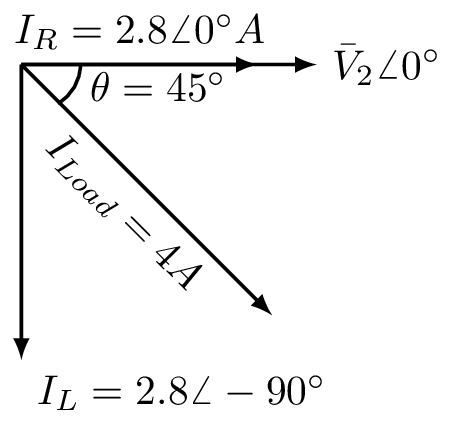

\documentclass{standalone}
\usepackage{tikz}
\usepackage{siunitx}
\begin{document}
\begin{tikzpicture}[>=latex]
%\draw[style=help lines] (0,0) (3,2);
%\coordinate (vec1) at (300:1.5);
%\coordinate (vec2) at (30:2.5);
%\coordinate (vec3) at (0:2.5);
%\coordinate (vec4) at (90:2);
%\coordinate (vec5) at (270:2);
%\coordinate (vec6) at (180:2);
\coordinate (vec1) at (0:2.5);
\coordinate (vec1mid) at (0:2);
\coordinate (vec2) at (270:2.5);
\coordinate (vec3) at (315:3);
\draw[->,thick,black] (0,0) -- (vec1) node[right] {$\bar{V}_2 \angle0^\circ$};
\draw[->,thick,black] (0,0) -- (vec1mid) node[midway,above] {$I_R = 2.8 \angle0^\circ A$};
\draw[->,thick,black] (0,0) -- (vec2) node[below right] {$I_L=2.8 \angle-90^\circ$};
\draw[->,thick,black] (0,0) -- (vec3) node[midway, below, sloped] {$I_{Load} = 4 A$};
%\draw[->,thick,black] (0,0) -- (vec3) node [below] {$Re$};
%\draw[->,thick,black] (0,0) -- (vec4) node [left] {$Im$};
%\draw[->,thick,black] (0,0) -- (vec5);
%\draw[->,thick,black] (0,0) -- (vec6);
%\draw [black, thick ] (1.0,0) arc (0:30:1cm) node [midway, right] {$\theta=45^\circ$};
\draw [black, thick] (0.5,0) arc (0:-60:0.38cm) node [midway, right] {$\theta=45^\circ$};
\end{tikzpicture}
\end{document}Created by David Li